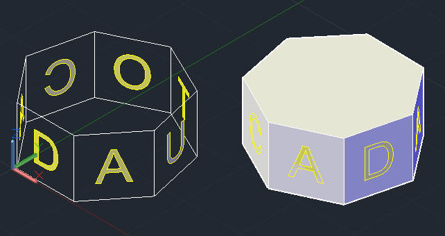

在三維空間中建立2D文字的方式，最基本的要領就是掌握UCS三向座軸，以下幾種方式均已UCS操作為出發點，在此提供大家一同參考研討。
建立三維文字-UCS方法、建立三維文字-動態UCS方法、建立三維文字-複製貼上方法、建立三維文字-環形陣列方法
範例檔下載:
範例-2000版本
大家可以透過以下範例影片了解 工作平面，也就是說要建立2D物件，第一件事就是要找到你的工作平面，再來調整XY方向來是和建立物件，方法其實還有很多種，還可以搭配技巧運用找到很多方式，有不錯的方法也請您一起分享!
請說明你的方式!
一、建立三維文字-UCS方法
二、建立三維文字-動態UCS方法
三、建立三維文字-複製貼上方法
四、建立三維文字-環形陣列方法